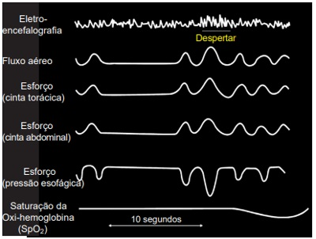
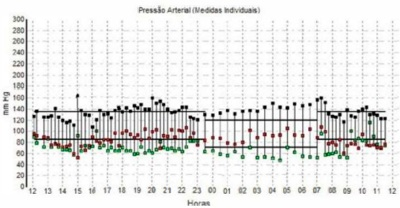
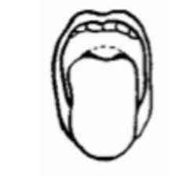

Homem, 38 anos, tem roncos e sonolência diurna há 2 anos. Refere obstrução nasal e sua esposa diz que, durante a noite, o paciente apresenta episódios em que “para de respirar” e parece que parece estar “engasgado”. Sem antecedentes mórbidos relevantes. O exame clínico é normal, com exceção de IMC = 34 kg/m². Considerando a principal hipótese diagnóstica, qual a terapia clínica de escolha para o caso?
Analise as assertivas abaixo relacionadas aos transtornos do sono: I. Os quadros de insônia são mais frequentes em homens e têm predisposição familiar. II. O tratamento deve ser iniciado por medidas não farmacológicas (higiene do sono). III. Deve-se considerar a síndrome obstrutiva do sono em casos de sonolência excessiva diurna. Quais estão corretas?
Paciente masculino, de 50 anos, veio à consulta queixando-se de despertares frequentes durante o sono noturno e fadiga diurna. Com base no registro abaixo, ilustrativo de uma época (registro de 30 segundos) de uma polissonogra a de noite inteira, qual o diagnóstico mais provável?

Cardiologia Homem de 44 anos chega para consulta acompanhado da esposa, a qual reclama que ele ronca muito à noite. Ao nal da avaliação, o médico explica que o diagnóstico provável é de apneia obstrutiva do sono. A orientação do pro ssional deve ser de que tal condição é fator de risco para
A síndrome da apneia e hipopneia obstrutiva do sono (SAHOS) é uma alteração caracterizada pela obstrução das vias aéreas superiores (VAS) decorrente do colapso repetitivo de estruturas faríngeas, resultando em distúrbios de troca gasosa e em fragmentação do sono. No que se refere a esse tema, assinale a alternativa correta.
Homem de 60 anos procura atendimento devido a cefaleia refratária e sonolência diurna excessiva há 4 meses. Há 2 meses vem apresentando amnésia para fatos recentes e anomia. É obeso, hipertenso, diabético, sedentário, dislipidêmico, etilista e tabagista. No momento, apresenta-se com pressão arterial = 180 x 120 mmHg, fundoscopia KW3 e todo o restante do exame neurológico normal. Qual é o melhor exame complementar para fazer o diagnóstico da patologia que, ainda não diagnosticada, in uencia negativamente o controle das demais moléstias apresentadas por ele e agrava todo o seu prognóstico?
Homem de 62 anos apresenta cansaço intenso diário e episódios de esquecimentos há 5 anos. AP: doença do re uxo gastroesofágico (DRGE), HAS e consumo de duas doses de cerveja/dia. Nega tabagismo. Faz uso contínuo de omeprazol, hidroclorotiazida, losartana e propranolol. Exame físico: altura 1,60 m; peso 98 kg; circunferência cervical 41 cm; P A 180/90 mmHg; FC 89 bpm; FR 18 ipm. Hipoplasia mandibular; 2 bulhas rítmicas hipofonéticas; pulmonar: murmúrio vesicular presente, sem ruídos adventícios; abdome globoso. Dentre os exames complementares relacionados, o mais adequado a ser solicitado nesse momento é:
Um paciente com queixa de sono fragmentado e nictúria. Após a avaliação clínica inicial, apresentava pontuação de 6 no questionário STOP BANG. Assinale a alternativa que indica corretamente o exame complementar para o esclarecimento diagnóstico.
Homem, 45 anos, portador de hipertensão arterial há 5 anos em tratamento com hidroclorotiazida, enalapril e anlodipino em doses máximas retorna para seguimento com onitorização ambulatorial da pressão arterial (MAPA). Queixa se de episódios de elevação de pressão arterial em domicílio, apesar da aderência ao tratamento farmacológico e não farmacológico, e nega uso de outras medicações. Exame físico sem alterações, PA: 143 x 91 mmHg, FC 73 bpm, peso de 80 kg, altura 1,6 m. MAPA (figura) com média das pressões em 24 horas de 135 x 86 mmHg. Qual a condição clínica mais provável neste caso?

Um empresário de 62 anos, procurou um médico especialista em distúrbios do Sono pois sua esposa reclamava dos seus roncos e engasgos noturnos. Ao exame físico tem IMC- 38, aumento das circunferências cervical e abdominal e Mallampati classe IV Foi solicitada Polissonogra a de noite inteira que evidenciou Índice de Apneia e Hipopneia de 23 com dessaturações e hipoxemia durante o exame. Sendo assim, a gravidade da apneia obstrutiva do sono e o melhor tratamento proposto são:
Um paciente de 35 anos, obeso apresenta níveis de pressão arterial elevados e pouco responsivos às medicações usuais. Como sintoma, ele refere, apenas, fadiga e sonolência. Sabendo que ureia, creatinina e eletrólitos estão dentro da normalidade, qual seria o diagnóstico mais provável para o caso?
Mulher, 62a, comparece para consulta médica com queixa de dispneia aos moderados esforços (NYHA II), fadiga crônica, sonolência diurna. Antecedentes pessoais: hipertensão arterial e diabetes há 20 anos, em uso de metformina 850mg/dia e losartana 50 mg/dia. Nega tabagismo, etilismo ou doença pulmonar prévia. Exame físico: Peso= 106 kg, altura= 1,60 m, oximetria de pulso (ar ambiente)= 88%, FC= 90 bpm, PA= 156x98 mmHg. Pletórica; Pulmões: murmúrio vesicular reduzido globalmente. Gasometria arterial (ar ambiente): pH= 7,38; paO₂= 52 mmHg, paC₂2= 56 mmHg, HCO₃= 30 mmol/L, sat O₂= 88%. Espirometria= distúrbio misto de grau leve. A HIPÓTESE DIAGNÓSTICA É:
Um paciente de 37 anos de idade, bancário, procura um serviço de saúde mental, encaminhado pelo médico do banco. Na entrevista inicial, relata que, há um mês, recebeu uma promoção no trabalho, mediante a qual terá que mudar de cidade e passará a che ar uma equipe de 20 pessoas. Soube também que terá como superior imediato o gerente geral, uma pessoa muito severa e que impõe metas que são quase impossíveis de alcançar. Desde então, vem apresentando tristeza, chora com facilidade, sente desânimo, ansiedade, insônia, o coração “dispara” e mostra-se agitado quando está em casa e pensa que tem de trabalhar, que terá que se mudar, assim como que precisará ter contato frequente com seu futuro chefe. Está consumindo grande quantidade de bebidas alcoólicas para sentir-se mais calmo e conseguir dormir. A respeito desse caso clínico e com base nos conhecimentos médicos correlatos, julgue os itens a seguir. No tratamento da insônia, o urazepam é melhor para di culdades em pegar no sono. Já o zolpidem e o triazolam são melhores para insônia no meio da noite.
Um paciente de 37 anos de idade, bancário, procura um serviço de saúde mental, encaminhado pelo médico do banco. Na entrevista inicial, relata que, há um mês, recebeu uma promoção no trabalho, mediante a qual terá que mudar de cidade e passará a che ar uma equipe de 20 pessoas. Soube também que terá como superior imediato o gerente geral, uma pessoa muito severa e que impõe metas que são quase impossíveis de alcançar. Desde então, vem apresentando tristeza, chora com facilidade, sente desânimo, ansiedade, insônia, o coração “dispara” e mostra-se agitado quando está em casa e pensa que tem de trabalhar, que terá que se mudar, assim como que precisará ter contato frequente com seu futuro chefe. Está consumindo grande quantidade de bebidas alcoólicas para sentir-se mais calmo e conseguir dormir. A respeito desse caso clínico e com base nos conhecimentos médicos correlatos, julgue os itens a seguir. A insônia persistente no transtorno de insônia envolve dois problemas: tensão e ansiedade somatizadas e uma resposta associativa condicionada.
Um paciente de 37 anos de idade, bancário, procura um serviço de saúde mental, encaminhado pelo médico do banco. Na entrevista inicial, relata que, há um mês, recebeu uma promoção no trabalho, mediante a qual terá que mudar de cidade e passará a che ar uma equipe de 20 pessoas. Soube também que terá como superior imediato o gerente geral, uma pessoa muito severa e que impõe metas que são quase impossíveis de alcançar. Desde então, vem apresentando tristeza, chora com facilidade, sente desânimo, ansiedade, insônia, o coração “dispara” e mostra-se agitado quando está em casa e pensa que tem de trabalhar, que terá que se mudar, assim como que precisará ter contato frequente com seu futuro chefe. Está consumindo grande quantidade de bebidas alcoólicas para sentir-se mais calmo e conseguir dormir. A respeito desse caso clínico e com base nos conhecimentos médicos correlatos, julgue os itens a seguir. Para o diagnóstico de transtorno de insônia, é importante considerar, entre outros fatores, a frequência das di culdades relacionadas ao sono, pois elas precisam estar presente pelo menos em uma noite por semana, por pelo menos um mês.
Um paciente de 37 anos de idade, bancário, procura um serviço de saúde mental, encaminhado pelo médico do banco. Na entrevista inicial, relata que, há um mês, recebeu uma promoção no trabalho, mediante a qual terá que mudar de cidade e passará a che ar uma equipe de 20 pessoas. Soube também que terá como superior imediato o gerente geral, uma pessoa muito severa e que impõe metas que são quase impossíveis de alcançar. Desde então, vem apresentando tristeza, chora com facilidade, sente desânimo, ansiedade, insônia, o coração “dispara” e mostra-se agitado quando está em casa e pensa que tem de trabalhar, que terá que se mudar, assim como que precisará ter contato frequente com seu futuro chefe. Está consumindo grande quantidade de bebidas alcoólicas para sentir-se mais calmo e conseguir dormir. A respeito desse caso clínico e com base nos conhecimentos médicos correlatos, julgue os itens a seguir. Na história clínica do paciente, a presença de insônia remete à necessidade de avaliar se ela é um sintoma dentro do diagnóstico principal ou se constitui um transtorno de insônia.
Idosa de 75 anos portadora de hipertensão arterial sistêmica, diabetes, dislipidemia, osteoartrose, depressão e osteoporose vem ao Posto de Saúde para atendimento médico com queixa de insônia. Refere que dorme de 22 até 4 horas da manhã e durante o dia tem um cochilo após o almoço por volta de 13h até as 15 horas. É independente para atividades básicas de vida diária e está em uso de: losartana 100mg/d, hidroclorotiazida 25mg/d, AAS 100mg/d, omeprazol 20mg/d, glibenclamida 5mg/d, amitriptilina 10mg/d e bromazepan 3mg/d. Nega queixas e apresenta exame físico sem alterações. Relata 3 episódios de queda no último ano. Qual o ajuste farmacológico prioritário para a paciente?
Homem de 52 anos foi avaliado por queixa de cefaleia occipital frequente, fadiga e sonolência diurna. Sedentário, também referia dispneia aos esforços mais acentuados como correr ou subir escadas. Ao exame, apresentava IMC 32,5 kg/m2, circunferência abdominal 102 cm, PA: 150 x 100 mmHg, pulso 95 bpm. Abdômen: globoso por adiposidade e sem estrias. Exames bioquímicos: Glicemia 118 mg/dL, A1C: 5,5%, Colesterol: 225 mg/dL, HDL: 32 mg/dL, Triglicerides: 335 mg/dL, LDL: 126 mg/dL. Foi prescrito losartana e recomendado mudanças no estilo de vida. LEGENDA: IMC: índice de massa corporal; PA: pressão arterial; bpm: batimentos por minuto; A1C: hemoglobina glicada. Qual conduta adicional seria a mais indicada?
Assinale a assertiva incorreta sobre o sono e seus distúrbios na infância.
Em relação à síndrome da apneia obstrutiva do sono podemos afirmar que: I – É mais frequente em homens. II – Tem relação com a obesidade e circunferência do pescoço acima de 40 cm. III – É mais frequente em negros e asiáticos.
Seu Antônio, 60 anos, durante consulta médica na unidade básica de saúde, queixou-se que por volta de um ano apresenta insônia. Referiu ainda o uso de corticoterapia frequente para tratamento de asma. Tem por hábito tomar muito café com pão e relata também que seu quarto é muito quente. Ao ouvir as queixas do seu Antônio o médico prescreveu Alprazolam 2mg para tomar 1 comprimido à noite e agendou nova consulta em três meses. Com base no texto acima marque a alternativa correta:
Segundo a classificação de Mallampati, o paciente classificado como grau III, expõe:
Benedito, 65 anos, aposentado, cou viúvo há 3 meses, vem à Unidade Básica de Saúde solicitar medicação para dormir, porque há mais de 1 mês tem sentido uma grande di culdade para adormecer, cando várias horas na cama acordado e permanecendo muito cansado durante o dia. Nega quadro prévio de alteração do sono ou problema com roncos. Conta que seu pai tinha crises de insônia e usava Rivotril. No manejo da insônia no caso de Benedito, é recomendado
Qual das alterações hematológicas abaixo está mais relacionada à síndrome das pernas inquietas?
Na avaliação pré-anestésica o anestesista examina a orofaringe para classificar a via aérea usando a classificação de Mallampati. No exame realizado foi identi cado apenas o palato duro, não visualizando a úvula e nem os pilares. Qual o Mallampati?
Revisar: possível letra faltando em enunciado
O paciente que apresenta apenas o palato mole e a base da úvula visíveis em um paciente sentado, com a boca totalmente aberta durante a protrusão máxima da língua, é classificado como Mallampati classe
Paciente de 70 anos, com hérnia inguinal direita, sempre redutível, há 2 anos. É obeso (IMC = 42Kg/m2), hipertenso e diabético tipo II. Tem apnéia obstrutiva do sono e queixas urinárias que sugerem prostatismo moderado. Qual a melhor conduta no pré-operatório:
Mãe traz a lha de 2 anos para avaliação referindo que a menina tem di culdade para pegar no sono, acorda várias vezes à noite e vai até a cama da mãe para poder dormir, além de apresentar sonolência durante o dia. Sobre as recomendações a serem feitas nesse caso, é incorreto afirmar que:
As alterações do sono, apesar de serem comuns nos indivíduos que buscam atendimento em serviços de Atenção Primária à Saúde, raras vezes é a queixa principal de uma consulta médica e difícilmente é investigada na anamnese. Com relação a higiene do sono, assinale a alternativa INCORRETA:
O tratamento de escolha para a síndrome da apneia e hipopneia obstrutiva do sono – SAHOS moderada ou importante é o uso da pressão positiva contínua (CPAP) em vias aéreas superiores durante o sono. NÃO sendo correto se considerar que:
Assinale a alternativa que representa na classificação de Mallampati, a visualização da úvula, palato mole, palato duro e pilares.:
As doenças psiquiátricas vêm ganhando destaque ao longo da última década, com alguns levantamentos epidemiológicos apontando, por exemplo, a prevalência de transtorno de ansiedade superior a 25% em populações adultas. Nesse contexto, passa a ser importante para o clínico saber abordar alguns sintomas, que passaram a se tornar mais frequentes nos ambulatórios. Referente à semiologia da insônia podemos afirmar que:
A Síndrome da Apneia Obstrutiva do Sono é uma condição que merece destaque na avaliação pré-anestésica, uma vez que sua ocorrência está relacionada à possibilidade de ventilação difícil sob máscara. Dentre os principais fatores predisponentes associados a essa síndrome, estão os abaixo listados, EXCETO.
Com relação a doenças respiratórias, julgue o item a seguir. A síndrome da apneia obstrutiva do sono (SAOS) aumenta, de forma significativa, o risco de doença coronariana; insu ciência cardíaca (com ou sem redução da fração de ejeção); ocorrência de arritmias atriais e ventriculares; aterosclerose; doença coronariana; acidente vascular encefálico e diabetes melito.
Segundo a classificação de Mallampati, podemos classificar a figura abaixo como classe:

A atenção básica tem como um dos seus princípios, possibilitar o primeiro acesso das pessoas ao sistema de saúde, inclusive daquelas que demandam um cuidado em saúde mental. É de extrema importância, que o pro ssional médico, atuante em uma unidade básica de saúde, detenha conhecimento sobre as medicações mais comumente utilizadas na área da saúde mental. Os benzodiazepínicos são extremamente populares em termos de utilização no Brasil. Marque a alternativa que contenha um exemplo de benzodiazepínico que não possua a classificação de “perfil indutor do sono”.
Casal chega ao ambulatório de pediatria, queixando-se de que seu lho, um lactente de 18 meses, tem di culdade de dormir desde o nascimento, a qual vem se acentuando paulatinamente. A partir do relato dos pais, é possível chegar à conclusão de que se trata de uma insônia comportamental, definida como:
A respeito da medicina do sono, assinale a alternativa correta.
Paciente sem qualquer histórico clínico pregresso e sem relato de qualquer medicação em uso, é submetido a exame de monitorização ambulatorial da pressão arterial, após aferição pressórica isolada de 140 x 80 mmHg em consultório. Laudo do exame mostra comportamento normal da pressão arterial durante a vigília e atenuação do descenso noturno. Dentre as opções abaixo, esse achado pode estar relacionado mais PROVAVELMENTE a:
Podemos afirmar que o paciente que possui apenas palato duro visível, possui Mallampati:
CPAP Aparelho de Pressão Positiva Contínua na Via Aérea Homem de 42 anos, apresenta queixa de roncos e sonolência diurna, com facilidade para cochilar durante o dia. Portador de síndrome metabólica, em programação de cirurgia bariátrica. Diante da possibilidade diagnóstica de Síndrome da Apneia Obstrutiva do Sono (SAOS), é correto afirmar que o paciente:
Faça a correlação entre a situação clínica e a conduta recomendada. Situação clínica: pacientes idosos, com quadro de deficit cognitivo. 1. Primeiro paciente: evolução de 1 ano, apresentando Atividades de Vida Diárias (AVDs) anormais e exame de mini exame do estado mental (mini-mental) 12, para escolaridade de 8 anos. HPP: sem doenças prévias e em uso de Ginkgo biloba há 3 meses, indicado por um médico do serviço básico de saúde. Exames laboratoriais e TC de crânio normais; 2. Segundo paciente: evolução de 9 meses, apresentando AVDs anormais e exame de mini-mental 28, para escolaridade de 8 anos. Apresenta-se com labilidade emocional e anedonia. Exames laboratoriais e TC de crânio normais; 3. Terceiro paciente: evolução de 10 dias, com de cit de atenção, desorientação importante, alteração do ciclo sono vigília. AVDs anormais. Foi impossível aplicar o mini-mental devido ao de cit de atenção. Exames laboratoriais: hemograma: Hb = 14; VCM = 87; leucócitos = 12.000; plaquetas = 250.000; urina tipo1 pH = 7.0; densidade = 1026; leucócitos = 500.000; hemácias = 15.000; bacteriúria intensa; 4. Quarto paciente: evolução de 9 meses, após uso de benzodiazepínico devido à insônia, apresentando AVDs normais e mini-mental 26, para escolaridade de 8 anos. Exames laboratoriais e TC de crânio normais. Condutas recomendadas: a. Suspender o medicamento em uso, devido ao deficit cognitivo; b. Tratar especificamente a causa desencadeante, por se tratar de um quadro de delirium; c. Iniciar com anticolinesterásico, devido ao quadro sugestivo de Alzheimer; d. Iniciar o tratamento com citalopram, devido ao quadro sugestivo de depressão. Assinale a alternativa que apresenta as correlações CORRETAS:
Uma senhora de 58 anos de idade vem à Unidade de Saúde da Família para uma consulta de rotina e queixa-se que sempre teve problemas para dormir e que isto tem piorado muito nos últimos anos. Está mais dispersa, com di culdades de se concentrar e está cando muito sonolenta durante o dia. A paciente é saudável, não apresenta sintomas ansiosos ou depressivos. Você então solicita que a paciente faça um diário do sono e siga algumas recomendações básicas para uma boa higiene do sono. Dois meses depois, ela retorna e queixa-se que apesar de atender às recomendações sugeridas, ainda mantém o quadro de insônia. Você opta por iniciar tratamento medicamentoso por um curto período de tempo. Dentre as possibilidades apresentadas, qual a melhor opção terapêutica?
Dentre os fatores clínicos predisponentes, as doenças cardiovasculares destacam-se a presença de Apneia Obstrutiva do Sono (AOS). Marque a opção que NÃO é compatível com essa situação clínica.
Na classificação de Mallampati, a visualização da úvula, palato mole, palato duro e pilares, é:
Uma paciente de 58 anos procura o médico com queixas de sonolência excessiva. Refere que cai no sono facilmente durante atividades, como assistir televisão e ler. Acrescentou que, mais recentemente, isso vem comprometendo suas atividades pro ssionais. Ao exame físico, observa-se uma paciente obesa (IMC 38 kg/m²), com PA de 150 x 90 mmHg, sem nenhuma outra anormalidade. Traz exames laboratoriais que descartam disfunção tireoidiana, anemia e distúrbios eletrolíticos. Qual dos exames abaixo seria mais útil na elucidação diagnóstica desse caso?
Em relação à apneia obstrutiva do sono, assinale a alternativa CORRETA:
Tratamento da insuf iciência respiratória crônica A apneia do sono é uma doença que frequentemente faz parte de síndromes clínicas incluindo várias doenças. A associação com obesidade e obstrução de vias aéreas pode causas hipoventilação alveolar, que compreende as seguintes alterações:
Durante a consulta pediátrica, a mãe de um adolescente de 13 anos refere que ele tem acordado durante a madrugada emitindo gritos, apresentando sudorese e choro de início abrupto, por cerca de dois minutos. Apesar de ser consolado, não se acalma. Na maioria das vezes, dorme novamente como se nada tivesse acontecido, não se lembrando do fato ao despertar. Qual é o transtorno do sono caracterizado pela descrição apresentada?
Julgue o próximo item, relativo à síndrome de apneia obstrutiva do sono (SAOS). As variáveis com maior valor preditivo positivo para diagnóstico de SAOS são circunferência de pescoço, roncos e índice de massa corporal (IMC).
José, de cinquenta e cinco anos de idade, foi levado pelo SAMU ao pronto-socorro do Hospital de Base do Distrito Federal por apresentar sangramento nasal decorrente de um acidente de carro. Segundo um transeunte que testemunhou o fato, José dirigia o veículo a aproximadamente 40 km/h quando colidiu com um hidrante na descida de uma entrequadra do Plano Piloto. No hospital, o paciente não se lembrava de nada. Com base no caso clínico apresentado, julgue o seguinte item. Após a primeira avaliação e a contenção do sangramento, a hipótese diagnóstica a ser levantada pelo médico é a de que o paciente seja portador de síndrome de apneia obstrutiva do sono (SAOS), convulsão e depressão.
Um paciente de quarenta e oito anos de idade procurou atendimento médico queixando-se de sonolência diurna excessiva, ronco alto, pausas respiratórias testemunhadas, engasgos e sono agitado. O exame físico revelou pressão arterial de 150 mmHg x 100 mmHg; frequência cardíaca de 85 bpm; 1,70 m de altura; peso corporal de 118 kg; e palato ogival, sem outras alterações. O exame de polissonogra a mostrou índice de apneia-hipopneia por hora (IAH) igual a 25 eventos/hora. Tendo como referência esse caso clínico, julgue o item que se segue. O principal diagnóstico para o paciente em questão é síndrome de apneia obstrutiva do sono (SAOS).
Um paciente de quarenta e oito anos de idade procurou atendimento médico queixando-se de sonolência diurna excessiva, ronco alto, pausas respiratórias testemunhadas, engasgos e sono agitado. O exame físico revelou pressão arterial de 150 mmHg x 100 mmHg; frequência cardíaca de 85 bpm; 1,70 m de altura; peso corporal de 118 kg; e palato ogival, sem outras alterações. O exame de polissonogra a mostrou Índice de Apneia-hipopneia por Hora (IAH) igual a 25 eventos/hora. Tendo como referência esse caso clínico, julgue o item que se segue. No caso em consideração, recomenda-se, como principal tratamento, a realização de pressão positiva contínua nas vias respiratórias.
Um paciente de quarenta e oito anos de idade procurou atendimento médico queixando-se de sonolência diurna excessiva, ronco alto, pausas respiratórias testemunhadas, engasgos e sono agitado. O exame físico revelou pressão arterial de 150 mmHg x 100 mmHg; frequência cardíaca de 85 bpm; 1,70 m de altura; peso corporal de 118 kg; e palato ogival, sem outras alterações. O exame de polissonografia mostrou índice de apneia-hipopneia por hora (IAH) igual a 25 eventos/hora. Tendo como referência esse caso clínico, julgue o item que se segue. No caso em apreço, a pressão arterial elevada decorre da inibição absoluta da atividade do sistema nervoso parassimpático (vagal) do paciente.
No mundo de hoje com tantas tensões e estresses (trânsito, violência, dinheiro, trabalho), temos em torno de 50% das consultas médicas apresentando queixa de insônia ou inquietações para realizações de atividades. Mulher de 50 anos chega com queixa de insônia há 2 semanas. Segundo ela, demora a "pegar no sono", desperta no meio da madrugada e não dorme mais. Qual conduta a ser tomada?
ADAPTADA avaliação da cavidade oral, em posição sentada, boca totalmente aberta e língua totalmente protraída. Conforme a classificação proposta, um paciente, em que se é possível observar palato mole, palato duro e a maior parte da úvula, pode ser classificado como:
Durante o sono REM, todos os seguintes sintomas são encontrados, exceto
Com relação às evidências encontradas nos estudos sobre o sono de adultos, analise as seguintes afirmativas: I. A média maior do que nove horas diárias de duração do sono de uma pessoa está associada com longevidade aumentada. II. Alterações no sono estão associados a risco aumentado de transtornos psiquiátricos. III. A privação do sono está associada a prejuízo no metabolismo da glicose, na relativa insensibilidade à insulina e na alteração da função imunológica. Está/estão correta(s) a(s) afirmativa(s):
Pré-escolar, 18 meses de idade, sexo masculino, é trazido à consulta, pois sua mãe está preocupada com o sono da criança. Está apresentando, frequentemente, durante a noite, gritos e choro contínuo súbito, inconsolável, não relacionado com fome, "parecendo não reconhecer os pais e não respondendo ao chamado". O episódio tem duração de até 15 minutos e depois a criança volta a dormir. Na manhã seguinte, acorda bem e não recorda o ocorrido. A manifestação é compatível com:
Você está avaliando em domicílio um paciente masculino, obeso mórbido, que está imobilizado após sofrer fratura de vértebra cervical devido a acidente de trânsito em que dormiu ao volante. Refere que vem tendo sonolência excessiva durante o dia, lapsos de memória, labilidade emocional. Esposa ainda relata roncos frequentes com pausas respiratórias durante o sono. Nega outras comorbidades, uso de medicações ou drogas ilícitas. O diagnóstico mais provável e o exame inicial mais apropriado neste momento são, respectivamente,
Um paciente de quarenta anos de idade procurou atendimento médico queixando-se de sonolência diurna que, de acordo com o relato, estaria mais intensa nos últimos seis meses. O paciente relatou que, apesar de dormir cerca de oito horas por noite, tem acordado com a sensação de não estar de todo descansado. A esposa do paciente informou que ele ronca muito durante a noite e que, em alguns momentos, para de respirar e acorda bruscamente. No exame físico, o paciente se apresentou sem alteração digna de nota. A respeito desse caso clínico, julgue o próximo item. A realização de um exame de polissonografia faz-se desnecessária caso esse paciente não seja obeso.
Um paciente de quarenta anos de idade procurou atendimento médico queixando-se de sonolência diurna que, de acordo com o relato, estaria mais intensa nos últimos seis meses. O paciente relatou que, apesar de dormir cerca de oito horas por noite, tem acordado com a sensação de não estar de todo descansado. A esposa do paciente informou que ele ronca muito durante a noite e que, em alguns momentos, para de respirar e acorda bruscamente. No exame físico, o paciente se apresentou sem alteração digna de nota. A respeito desse caso clínico, julgue o próximo item. A utilização da escala de sonolência de Epworth mostra-se dispensável nessa situação, pois a sonolência excessiva apresentada pelo paciente ocorre durante o dia.
Um paciente de quarenta anos de idade procurou atendimento médico queixando-se de sonolência diurna que, de acordo com o relato, estaria mais intensa nos últimos seis meses. O paciente relatou que, apesar de dormir cerca de oito horas por noite, tem acordado com a sensação de não estar de todo descansado. A esposa do paciente informou que ele ronca muito durante a noite e que, em alguns momentos, pára de respirar e acorda bruscamente. No exame físico, o paciente se apresentou sem alteração digna de nota. A respeito desse caso clínico, julgue o próximo item: A possibilidade de o paciente, nesse caso, apresentar hipertrofia de amígdalas e (ou) da adenoide deve ser investigada.
Em se tratando da apneia obstrutiva do sono, assinale a alternativa ERRADA:
São associadas ao aumento de risco para síndrome da apneia obstrutiva do sono as seguintes condições:
Mulher com 35 anos refere história de insônia e sensações desagradáveis nas panturrilhas que ocorrem quando está sentada ou se deita. Essas sensações são temporariamente aliviadas por atividade física. Quando está dormindo, seu marido observa a presença de movimentos frequentes em flexão dos membros inferiores. Em relação a esta doença, está INCORRETO:
Paciente de 48 anos, motorista de ônibus, procurou unidade básica de saúde com queixas de fadiga, hipersonolência diurna relatando que a esposa se queixa do seu ronco à noite que não a deixa dormir. Ao exame físico: índice de massa corpórea de 32 kg/m², circunferência do pescoço de 41cm, PA:145x95mmHg, Pulso:80 ppm, f:16 irpm. Auscultas cardíaca e pulmonar dentro da normalidade. Traz hemograma, glicemia e exames da função da tireoide dentro da normalidade. Qual exame deve ser solicitado para confirmação do provável diagnóstico?
Os pais de um menino de 8 anos estão preocupados porque durante as últimas 2 semanas a criança tem acordado durante a noite. O menino acorda em um estado assustado, confuso e desorientado, apresenta rubor facial e sudorese profusa durante os episódios. Relatam que a criança retorna ao sono em alguns minutos e não tem lembrança do episódio no dia seguinte. Qual é a causa MAIS provável da perturbação do sono dessa criança?
Dentre as doenças do sono merece destaque a apneia obstrutiva do sono, por sua frequência, impacto na qualidade de vida e mortalidade associada. Assinale a alternativa verdadeira em relação à doença:
São fatores anatômicos que predispõem à apneia obstrutiva do sono e hipoventilação todas as possibilidades citadas abaixo, EXCETO:
Em relação à apneia obstrutiva do sono, assinale a alternativa correta.
“Doutor, eu vim pegar minha receita de RevotrilR (Clonazepan) ”, disse dona Nenzinha, 65 anos, ao sentar na cadeira do seu consultório. Ao ser indagada sobre como e por que usa tal medicação, ela responde que toma “de vez em quando”, mais ou menos duas vezes por semana, um comprimido de 0,5 mg, pois em geral tem di culdade de pegar no sono quando deita na cama para dormir. À anamnese e exame físico, não há outros achados relevantes, além do relato de insônia. Assinale abaixo a alternativa que representa a conduta mais adequada a ser tomada neste caso:
Pacientes com distúrbios de hipoventilação crônica frequentemente se queixam de cefaleia ao despertar. Qual é a causa desse sintoma?
Doença caracterizada por dores musculoesqueléticas crônicas difusas, mal definidas, geralmente acompanhada de sono não reparador e fadiga matinal, muito prevalente no sexo feminino, considerada como diagnóstico de exclusão, e que costuma responder à terapêutica a base de alguns antidepressivos e exercícios aeróbicos. Qual das alternativas é a correspondente?
Paciente obeso de 140 kg de peso, vai realizar cirurgia de obesidade por videolaparoscopia. No pré-operatório, foi avaliado segundo a classificação de MALLAMPATI, para ver o grau de di culdade na intubação. Qual manobra o médico deve fazer no exame físico do paciente para avaliar a possibilidade de uma intubação eficaz?
O pediatra atende uma criança de 4 anos, lha de pais em con ito familiar. A história é a seguinte: há 2 meses, nas primeiras horas após dormir, a criança senta-se na cama com fácies de pavor, agitação, gritos, gestos descoordenados, com sudorese, taquicardia, midríase. Não se consegue consolar a criança nesse momento, e, em 1 a 2 minutos, volta a dormir; no dia seguinte, ela passa bem e não se lembra do ocorrido. Assinale a hipótese diagnóstica desse caso.
Em que fase do sono a propensão a episódios de sonambulismo e terror noturno é maior?
Homem, 38 anos, pedreiro, branco, é tabagista de 1 maço por dia há 20 anos e consome 2 latas de cerveja por dia. HMA: Procurou atendimento porque sua esposa se queixa de seus roncos durante o sono há 6 anos. Nega diabetes. EF: BEG, eupneico, FR = 20 ipm, FC = 87 bpm, PA = 120/78 mmHg, IMC = 29 Kg/m2 e murmúrio vesicular presente bilateralmente sem ruídos adventícios. Ausculta cardíaca normal. Polissonogra a: índice de apneias-hipopneias= 4,8 eventos/hora (Valor normal ≤ a 5 eventos/hora) e tempo total com saturação de O2 abaixo de 90% = 4 minutos. A melhor opção terapêutica para este paciente é:
Masculino, 50 anos, IMC = 32 kg/m2. Queixa-se de sonolência excessiva diurna. Polissonogra a: índice de apneia/hipopneia: 60/hora, com queda de saturação de > 10%. Qual a conduta mais adequada?
Qual alternativa é a terapia mais definitiva para apneia obstrutiva do sono?
Homem de 50 anos, obeso, queixa-se de hipersonolência diurna e fadiga. Um estudo polissonográ co detectou episódios de cessação da respiração com duração entre 15 a 25 segundos, cerca de 35 episódios/hora com dessaturação (SpO2<88%) e manutenção do esforço respiratório durante os mesmos. Qual dentre as intervenções abaixo tem maior chance de sucesso terapêutico?
Revisar: possível letra faltando em enunciado
Mulher queixa-se de incômodo nas pernas que a obriga a movê-las vigorosamente ou andar, o que rapidamente alivia os sintomas. Esse incômodo inicia-se à noite quando se senta para descansar, mas é muito pior ao se deitar, impedindo-a de dormir. Qual o diagnóstico?
Um advogado procurou assistência médica por cefaleia matinal, falta de concentração, fadiga exagerada e sonolência diurna que, recentemente, o haviam feito perder o horário de duas importantes audiências. Seu IMC era de 32,4kg/m² e a circunferência do pescoço media 43 cm. Segundo sua esposa, ele cara irritadiço nos últimos meses, tinha o sono agitado, roncava muito e apresentava várias paradas respiratórias enquanto dormia, com despertar breve. No tratamento desta condição, está contraindicado o emprego de:
Paciente do sexo masculino, 45 anos, caminhoneiro, com história de ronco noturno e sonolência diurna excessiva, chegando a dormir, por alguns segundos, ao dirigir. Ao exame físico: desvio de septo nasal para esquerda e hipertro a de conchas nasais; palato volumoso e amígdalas normotró cas; a língua em repouso, com boca aberta, obstrui a visão do palato. Apresenta IMC (índice de massa corpórea) de 24 e polissonogra a evidenciando IAH (índice de apneia-hipopneia) de 28, de predomínio misto. O caso clínico, quanto ao prognóstico:
Revisar: possível letra faltando em enunciado
Paciente do sexo masculino, 45 anos, caminhoneiro, com história de ronco noturno e sonolência diurna excessiva, chegando a dormir, por alguns segundos, ao dirigir. Ao exame físico: desvio de septo nasal para esquerda e hipertro a de conchas nasais; palato volumoso e amígdalas normotró cas; a língua em repouso, com boca aberta, obstrui a visão do palato. Apresenta IMC (índice de massa corpórea) de 24 e polissonogra a evidenciando IAH (índice de apneia-hipopneia) de 28, de predomínio misto. Quanto ao diagnóstico:
Revisar: possível letra faltando em enunciado
Sobre a apneia obstrutiva do sono, assinale a alternativa correta. Respostas: 1 12 23 34 45 56 67 78